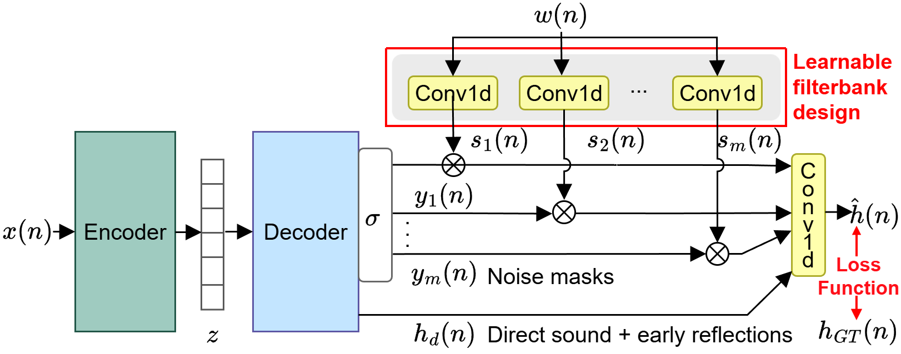
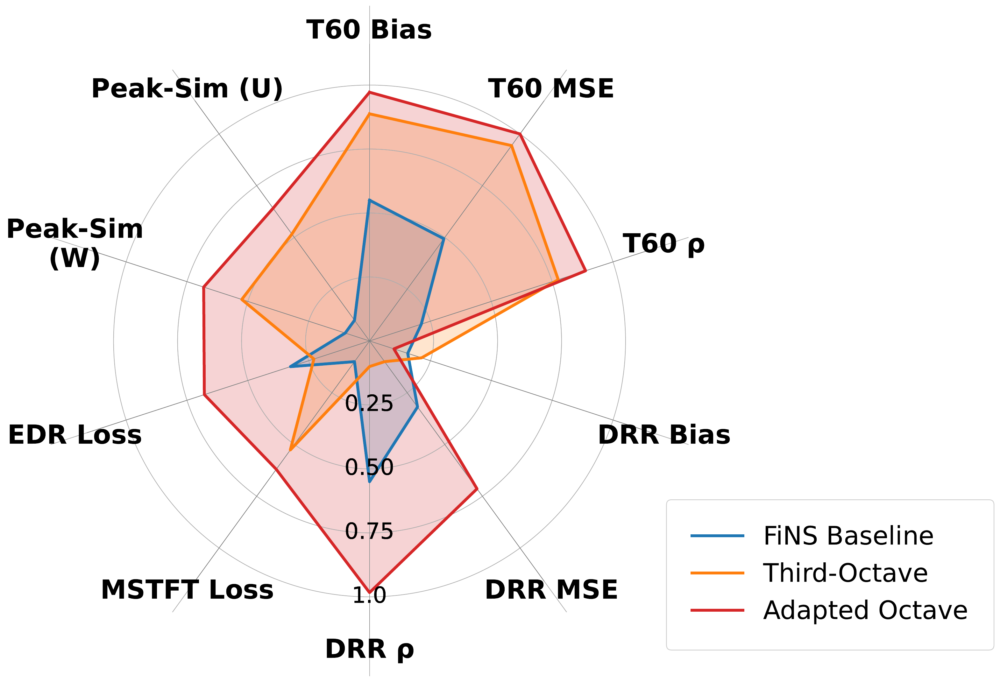
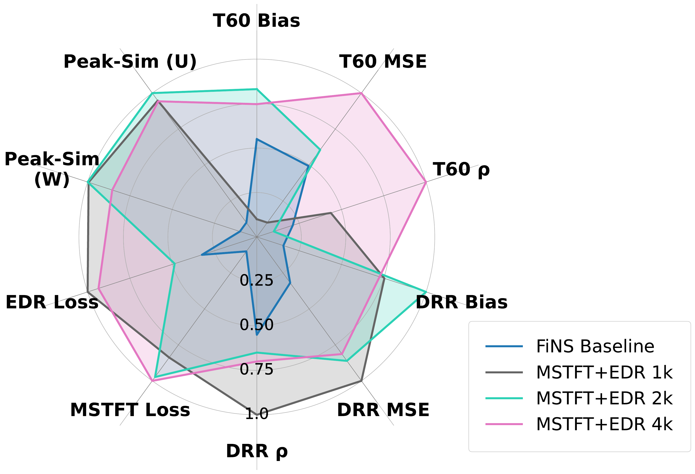

Room Impulse Responses (RIRs) model how sound interacts with acoustic environments and are critical for virtual reality, sound design, and related applications. Accurate RIR generation is therefore essential, yet existing evaluation approaches remain fragmented, relying on different datasets and metric combinations that capture only limited aspects of RIR characteristics. In addition, most current models are not publicly available, further hindering direct comparison. We introduce a comprehensive multi-metric framework combining metrics including DRR, T60, energy decay relief (EDR), multi-resolution STFT loss (MSTFT loss), and a newly designed peak similarity metric quantifying spectral peak accuracy. Using this framework, we compare two alternative enhancements to the Filtered Noise Shaping (FiNS) architecture: data-driven filterbank initialization and a combined MSTFT+EDR training objective. Evaluation on 11,500 RIRs from 295 rooms across 11 datasets demonstrates substantial improvements for the loss-based approach: 41% reduction in MSTFT loss, 25% increase in peak similarity, and superior frequency-dependent energy decay modeling.
We study two directions for improving the FiNS blind RIR generation architecture. First, we replace the standard octave filterbank initialization with data-driven center frequencies derived from spectral peak analysis of 11,500 real RIRs. Second, we augment the MSTFT training loss with an EDR component, explicitly modeling frequency-dependent exponential energy decay across nine octave bands.

All axes in the radar plots are normalized so that larger area corresponds to better performance. The multi-metric view reveals complementary trade-offs invisible to single-metric evaluation. Full numerical results are in the tables below.
Standard FiNS vs. adapted octave vs. third-octave filterbank

Baseline vs. combined loss at three FFT resolutions (1k / 2k / 4k)

| Model | T60 | DRR | ||||
|---|---|---|---|---|---|---|
| Bias → 0 | MSE (s) ↓ | ρ ↑ | Bias → 0 | MSE (dB) ↓ | ρ ↑ | |
| FiNS Baseline | 0.018 | 0.0047 | 0.955 | −1.61 | 26.56 | 0.742 |
| Adapted Octave | −0.003 | 0.0038 | 0.961 | −1.67 | 24.14 | 0.768 |
| Third-Octave | 0.006 | 0.0039 | 0.960 | −1.55 | 27.90 | 0.715 |
| MSTFT+EDR 1k | 0.034 | 0.0054 | 0.957 | −0.98 | 22.39 | 0.769 |
| MSTFT+EDR 2k | −0.008 | 0.0045 | 0.954 | 0.72 | 23.24 | 0.748 |
| MSTFT+EDR 4k | 0.011 | 0.0038 | 0.962 | 1.01 | 23.53 | 0.751 |
| Model | MSTFT Loss ↓ | Peak Similarity ↑ | |
|---|---|---|---|
| Weighted | Unweighted | ||
| FiNS Baseline | 2.286 | 0.636 | 0.753 |
| Adapted Octave | 1.740 | 0.740 | 0.857 |
| Third-Octave | 1.838 | 0.712 | 0.833 |
| MSTFT+EDR 1k | 1.511 | 0.796 | 0.916 |
| MSTFT+EDR 2k | 1.369 | 0.797 | 0.926 |
| MSTFT+EDR 4k | 1.341 | 0.771 | 0.915 |
Standard deviations across datasets — lower = more consistent across diverse acoustic environments.
| Model | T60 | MSTFT Loss σ ↓ | Peak Similarity | |||
|---|---|---|---|---|---|---|
| Bias σ ↓ | MSE σ ↓ | ρ σ ↓ | Weighted σ ↓ | Unweighted σ ↓ | ||
| FiNS Baseline | 0.027 | 0.010 | 0.266 | 0.846 | 0.179 | 0.188 |
| Adapted Octave | 0.025 | 0.012 | 0.271 | 0.563 | 0.152 | 0.184 |
| Third-Octave | 0.016 | 0.008 | 0.265 | 0.530 | 0.160 | 0.208 |
| MSTFT+EDR 1k | 0.019 | 0.009 | 0.356 | 0.293 | 0.121 | 0.170 |
| MSTFT+EDR 2k | 0.018 | 0.003 | 0.183 | 0.352 | 0.103 | 0.162 |
| MSTFT+EDR 4k | 0.011 | 0.004 | 0.163 | 0.299 | 0.126 | 0.167 |
More negative = lower loss. Best per column in bold.
| Model | 16 Hz | 32 Hz | 63 Hz | 125 Hz | 250 Hz | 500 Hz | 1 kHz | 2 kHz | 4 kHz | Avg ↓ |
|---|---|---|---|---|---|---|---|---|---|---|
| FiNS Baseline | −1.72 | −1.84 | −2.13 | −2.50 | −3.24 | −3.37 | −3.35 | −3.56 | −3.81 | −2.84 |
| Adapted Octave | −1.78 | −1.85 | −2.18 | −2.66 | −3.41 | −3.48 | −3.44 | −3.86 | −3.88 | −2.95 |
| Third-Octave | −1.82 | −1.92 | −2.13 | −2.37 | −3.22 | −3.29 | −3.39 | −3.54 | −3.57 | −2.81 |
| MSTFT+EDR 1k | −1.67 | −1.76 | −2.42 | −2.90 | −3.46 | −3.61 | −3.78 | −3.83 | −4.00 | −3.05 |
| MSTFT+EDR 2k | −1.69 | −1.89 | −2.27 | −2.97 | −3.45 | −3.42 | −3.36 | −3.44 | −3.48 | −2.89 |
| MSTFT+EDR 4k | −1.81 | −1.89 | −2.35 | −2.79 | −3.48 | −3.49 | −3.52 | −3.86 | −4.11 | −3.03 |
@inproceedings{stauss2026intune,
title = {In Tune with the Room: Advancing Blind RIR Generation
Through a Comprehensive Evaluation Framework},
author = {Stau{\ss}, Sebastian and Watanabe, Hiroshi and Schmid, Thomas},
booktitle = {Proceedings of the European Signal Processing Conference (EUSIPCO)},
year = {2026}
}